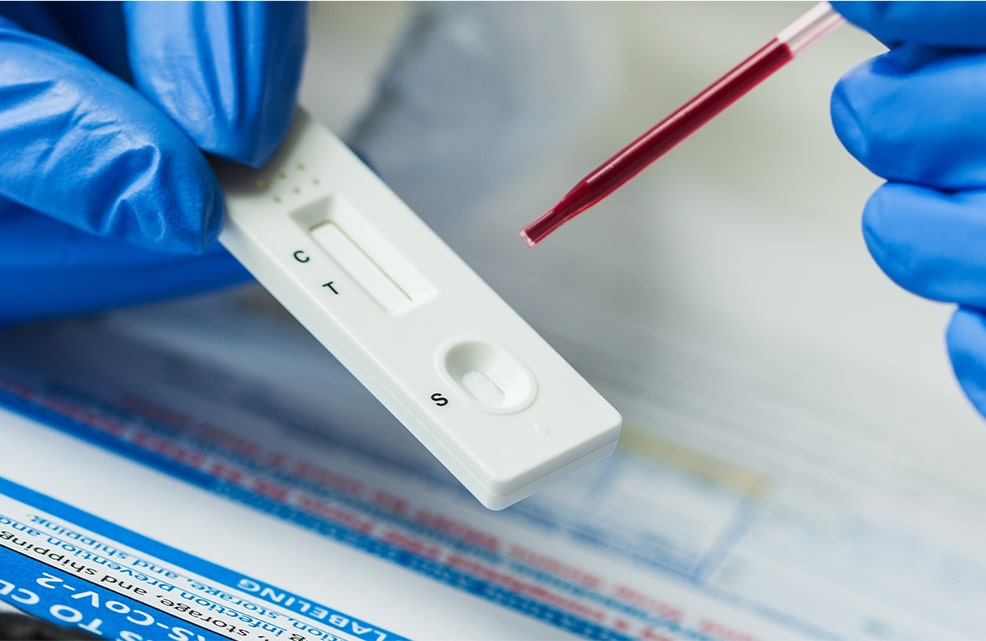

西鉄天神駅から徒歩1分！ 19時まで受付！
西鉄天神駅から徒歩1分！ 19時まで受付！
-
0120-133-220
受付 10:00～19:00 不定休
telephone -
アクセス
access -
来院予約
reservation -
お問合わせ
mail
HEPATITIS B Ｂ型肝炎
B型肝炎とは？
B型肝炎はB型肝炎ウイルスが血液・体液を介して感染して起きる肝臓の病気です。アルコールの過剰摂取などが原因の肝炎とは違う病気です。
B型肝炎ウイルスは肝臓に感染して炎症を起こし。肝炎が持続すると慢性肝炎から肝硬変、さらには肝がん（肝細胞癌）へと進展する可能性がある感染症です。
感染経路
-
垂直感染
出産時の産道の血液を介して感染、または、授乳の際の感染など、母親から直接その子供へと感染する事を垂直感染と言います。
-
水平感染
人から人へと感染が広がって行く事を水平感染と言います。
現在最も多い水平感染は性行為での感染です。過去には使用済の注射器や不衛生な器具を使用した医療行為などで感染していた事もありましたが、現在では医療環境の整備によりほとんど起きなくなりました。
感染様式の違いによる症状
-
一過性感染
一過性感染では、急性肝炎の症状が現れる方と、症状がないまま治癒する不顕性感染に分かれます。
どちらの場合でも症状がおさまった後はウイルスが体から排除されており、HBVに対する免疫を獲得します。
その後、再びHBVに感染することはありません。
HBV感染後、数ヵ月の潜伏期間を経て、“倦怠感”、“食欲不振”、“吐き気”などの症状があらわれます。
その後、皮膚や眼球の白い部分が黄色くなる“ 黄疸 ”があらわれることもあります。黄疸は自然に消え、肝機能も正常に戻ります。 -
持続感染
持続感染とは、ウィルスが体内から排除されず、6ヵ月以上にわたって肝臓の中にすみつくと、慢性肝炎を発症します。
慢性肝炎の多くは、出産時や幼児期に感染した無症候性キャリアからの発症です。※症状が出る人は感染者の約20〜30％と言われ、感染者の半数以上は症状が出ないまま、自然に治ります。
しかし症状が出る人のうちの1〜2％の方は、劇症肝炎を発症する可能性があり注意が必要です。
-
通常検査
結果報告 5〜7日体内のHBs抗原を測定し、検査結果が陽性の場合には、体内にB型肝炎ウイルスが存在すると考えられます。
ウイルスの遺伝子であるHBV-DNAの量を測定することで正確にわかります。- 検査料金
- お問合せ下さい

-
クイック検査
結果報告 即日 20〜30分C型肝炎はウィルスが肝臓に寄生し、慢性化すると、将来高率で肝硬変・肝臓癌を引き起こすウィルスです。
感染経路は血液を介しての感染が殆どであり、出血を伴う性行為、輸血などで感染します。
今回の検査が陽性の場合、C型肝炎ウィルスに対する抗体がある事になるため、過去に感染して今は治癒してしまっている人も陽性となる可能性があります。- 検査料金
- お問合せ下さい
